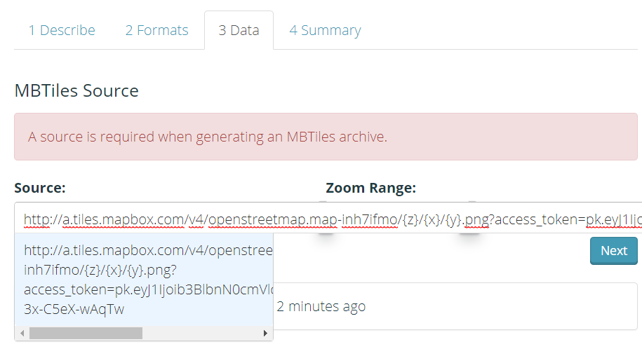
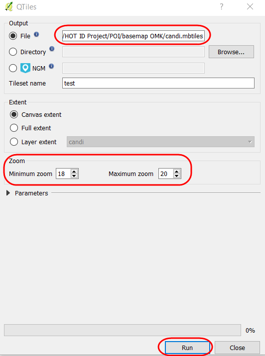

Pembuatan MBTiles untuk OpenMapKit (OMK)
Tujuan Pembelajaran:
- Memahami konsep MBTiles
- Mengoperasikan cara membuat MBTiles dengan menggunakan Export Tool
- Mengoperasikan cara membuat MBTiles dengan menggunakan Plugin QTiles
- Memahami cara memindahkan file MBTiles ke dalam OMK pada smartphone
Pada saat Anda menggunakan aplikasi OpenMapKit (OMK) untuk melakukan survei lapangan, terkadang Anda akan mengalami kesulitan dalam menentukan objek di aplikasi tersebut. Hal ini dikarenakan, latar belakang peta yang digunakan belum dipetakan di dalam OpenStreetMap dan Anda tidak memiliki waktu untuk mendigitasi objek di wilayah survei. Anda dapat menggunakan MBTiles untuk latar belakang peta yang merupakan citra satelit, sehingga memudahkan Anda dalam melakukan identifikasi objek di lapangan.
I. Pengertian MBTiles
MBTiles merupakan format data spasial untuk menyimpan beberapa tile peta yang digabung menjadi satu file dalam bentuk raster, sehingga tampilannya seperti citra satelit. Salah satu penggunaan MBTiles yaitu dapat digunakan sebagai basemap di dalam aplikasi OMK, yang memudahkan pengguna untuk menandai sebuah objek di lapangan. Basemap merupakan sebuah peta dasar yang menjadi latar belakang sebuah aplikasi, dapat berupa citra satelit dan peta OSM.

II. Membuat MBTiles dengan Export Tool
Export Tool merupakan salah satu situs yang digunakan untuk men-download data OpenStreetMap secara gratis berdasarkan fitur dan wilayah tertentu. Dimana format data spasial yang sering digunakan, yaitu: Shapefile (.shp), GeoPackage (.gpkg), dan MBTiles (.mbtiles). Langkah-langkah untuk membuat MBTiles dengan menggunakan export tools yaitu :
- Buka halaman situs Anda dan ketikkan https://export.hotosm.org/en/v3/, Anda harus login terlebih dahulu dengan menggunakan akun OpenStreetMap. Jika belum memiliki akun, Anda dapat membuatnya di situs https://www.openstreetmap.org pada modul Memulai Menggunakan OSM.
- Setelah Anda berhasil masuk, klik Start Exporting

- Lengkapi kotak dialog di sebelah kiri sebagai deskripsi proyek dan pilih wilayah yang Anda inginkan. Pemilihan wilayah dapat dilakukan dengan beberapa pilihan dengan tools yang berada di panel sebelah kanan. Anda tidak disarankan untuk memilih area yang terlalu besar pada penentuan luasan wilayah pembuatan MBTiles, karena akan terjadi kegagalan saat proses berlangsung. Jika Anda memiliki batas administrasi dalam format .geojson dapat menggunakan pilihan Import. Hal yang perlu diperhatikan file .geojson harus terdiri dari satu jenis data atribut. Pada modul ini, fitur yang akan digunakan adalah Import. Pilih Import dan masukkan file .geojson yang Anda miliki. Jika Anda tidak memiliki file .geojson, maka Anda dapat membuka modul Menggunakan GeoJSON.

- Langkah selanjutnya, klik Menu Format → Beri tanda centang pada MBTiles
-
Selanjutnya klik pada bagian Menu Data, Anda harus menyalin alamat URL tilemap dari citra satelit yang akan digunakan sebagai basemap. Anda mungkin hanya bisa melihat OpenStreetMap sebagai salah satu opsi untuk membuat MBTiles. Secara pengaturan awal Export Tools hanya menyediakan OpenStreetMap sebagai latar belakang MBTiles Anda. Namun, Anda bisa dengan mudah menambahkan tautan citra satelit lain. Untuk menambahkan tautan di bawah, pilih salah satu citra satelit yang tersedia, salin (copy) tautan di bawah dan letakkan (paste) pada kotak MBTiles Source yang terdapat di dalam Menu Data.
Mapbox Satellite http://a.tiles.mapbox.com/v4/openstreetmap.map-inh7ifmo/{z}/{x}/{y}.png?access_token=pk.eyJ1Ijoib3BlbnN0cmVldG1hcCIsImEiOiJncjlmd0t3In0.DmZsIeOW-3x-C5eX-wAqTw Digital Globe https://a.tiles.mapbox.com/v4/digitalglobe.316c9a2e/{z}/{x}/{y}.png?access_token=pk.eyJ1IjoiZGlnaXRhbGdsb2JlIiwiYSI6ImNqZGFrZ2c2dzFlMWgyd2x0ZHdmMDB6NzYifQ.9Pl3XOO82ArX94fHV289Pg -
Setelah Anda salin, Anda dapat menggeser ke kiri dan memilih tautan yang baru saja dimasukkan.

- Lakukan pengaturan Zoom Range yang digunakan untuk memilih batas level untuk memperbesar dan memperkecil tampilan MBTiles. Sebagai catatan, jika jarak antar zoom range semakin jauh maka ukuran file akan semakin besar.


- Langkah terakhir pilih menu Summary, pada bagian ini akan ditampilkan ringkasan dari proyek yang telah Anda lakukan. Jika proyek Anda ingin terlihat oleh pengguna lainnya dapat memilih Publish this Export. Kemudian klik Create Export untuk memproses pembuatan MBTiles.

- Dalam proses pembuatan MBTiles dibutuhkan beberapa menit tergantung dengan jaringan internet, luasan wilayah, dan zoom range yang telah diatur sebelumnya. Anda tidak perlu menunggu, karena export tool akan memberikan pemberitahuan melalui email saat proses telah selesai. Anda juga dapat melihat proyek lain yang telah dibuat pada Menu Exports.

- Setelah proses selesai, status proyek Anda berubah menjadi COMPLETED. Klik nama file yang ditandai dengan warna biru untuk men-download file mbtiles.

- MBTiles dapat dibuka dengan menggunakan software pemetaan seperti QGIS, sehingga menjadi tampilan citra satelit dalam bentuk offline. Hal ini dapat digunakan untuk memeriksa file mbtiles sebelum dimasukkan ke dalam aplikasi OMK, caranya buka QGIS → Add Raster Layer

III. Membuat MBTiles dengan menggunakan Plugin QTiles
Plugin QTiles merupakan plugin yang dapat digunakan untuk menghasilkan tile raster dari proyek QGIS. Plugin ini dapat menyimpan pengaturan perbesaran tampilan tile raster dari layanan tile seperti (Slippy map, TMS). Anda dapat menggunakan plugin QuickMapServices pada modul sebelumnya Pembuatan Peta Survei dengan QGIS, untuk menampilkan layanan tile raster. Kelebihan lainnya dengan menggunakan plugin ini, Anda dapat menampilkan layer jalan dan batas administrasi pada proyek QGIS, sehingga pada tampilan basemap OMK akan membantu data entry dalam pengenalan survei lapangan. Langkah - langkah yang dilakukan untuk membuat mbtiles dengan plugin QTiles, sebagai berikut:
a. Instal Plugin QTiles
- Buka QGIS dan install plugin dengan klik Menu Plugin → Manage and Install Plugin.Tuliskan pada kotak pencarian (Search) “qtiles” maka akan tampil di bawah ini, berikan tanda centang dan klik Install Plugin. Jika download plugin tidak berhasil, maka Anda dapat memeriksa jaringan internet.
- QTiles akan muncul pada Menu Plugin → QTiles → QTiles

b. Persiapan Data Layer
- Tambahkan data layer administrasi dan jaringan jalan yang dihasilkan dari pemetaan survei lapang. Klik Add Vector Layer → arahkan ke direktori penyimpanan file → Open → Open. Data layer akan tampil pada peta kanvas dan panel layer.
- Lakukan simbologi dan pemberian label pada layer tersebut agar memudahkan data entry dalam pengenalan survei lapangan.

- Sekarang Anda dapat menambahkan data layer yang berbentuk tilemap untuk menampilkan citra satelit pada peta kanvas QGIS, dengan cara klik Menu Web → QuickMapServices → Search QMS
- Pada kotak pencarian Search QMS ketikkan DigitalGlobe Premium Imagery, kemudian klik Add

- Basemap citra satelit akan muncul pada daftar layer dan map canvas

c. Penggunaan Plugin QTiles
- Anda dapat mengatur tampilan data layer, misalnya disesuaikan dengan tampilan batas administrasi, agar mempercepat proses pembuatan mbtiles

- Untuk menampilkan plugin QTiles, klik Menu Plugin → QTiles → QTiles. Kemudian akan tampil kotak dialog QTiles, klik Browse pada Directory dan buatlah folder baru dan nama file pada laptop/komputer Anda. Pada jenis file ganti dengan mbtiles dan simpan.

- Anda dapat mengatur perbesaran pada basemap digital globe dengan pengaturan yang terletak di bawah kotak dialog QTiles. Lakukan pengaturan pada minimum zoom dan maximum zoom, sebaiknya jarak antara keduanya tidak terlalu jauh, untuk mempercepat proses pembuatan mbtiles. Klik Run untuk memulai proses pembuatan mbtiles, proses ini akan memerlukan jaringan internet.

- Jika proses sudah 100%, maka Anda dapat klik Close. Untuk memeriksa file mbtiles tersebut, Anda dapat memasukkan file tersebut ke dalam QGIS dengan menggunakan Add Raster Layer → arahkan ke direktori penyimpanan → Open.

- Tampilan mbtiles tersebut akan muncul pada peta kanvas QGIS, seperti gambar di bawah ini

IV. Memasukkan MBTiles ke dalam OMK
Pada proses ini, Anda telah memiliki file dalam bentuk format mbtiles yang akan dimasukkan ke dalam aplikasi OMK pada smartphone android.
- Hubungkan perangkat smartphone dengan komputer untuk memindahkan kedua file tersebut ke dalam aplikasi OMK dengan kabel data.
- Temukan aplikasi OMK di dalam direktori internal smartphone, arahkan ke dalam folder mbtiles. Folder mbtiles digunakan untuk menyalin file basemap dalam format .mbtiles yang dihasilkan dari export tool atau dari plugin QTiles yang terdapat di QGIS.
- Buka aplikasi OpenMapKit pada smartphone Anda, dan aktifkan file .mbtiles yang telah dipindahkan dengan klik Menu Basemap pada aplikasi OpenMapKit. Anda dapat mempelajari modul Menggunakan Aplikasi OpenMapKit untuk mengetahui bagaimana cara kerja aplikasi tersebut.

RINGKASAN
Jika Anda telah menyelesaikan bab ini, Anda dapat membuat semua basemap berdasarkan wilayah administrasi yang diperlukan untuk aplikasi OMK yang akan digunakan dalam survei lapangan. Harap mengganti file .mbtiles per hari berdasarkan wilayah survei di dalam smartphone Anda agar tidak memberatkan kinerja smartphone.